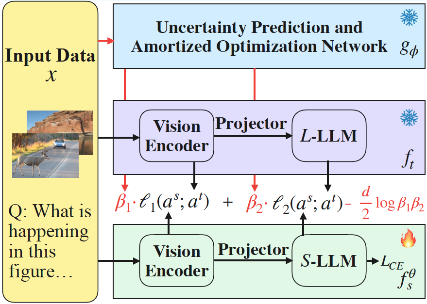
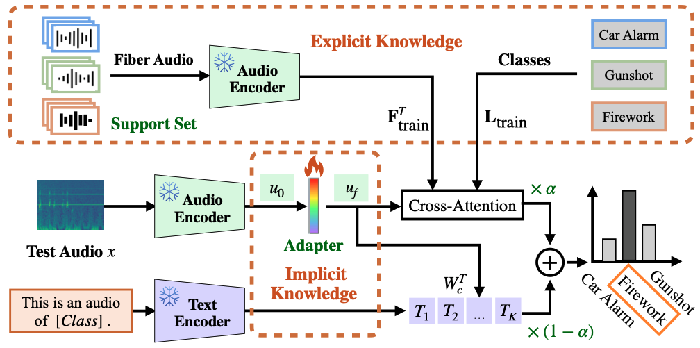
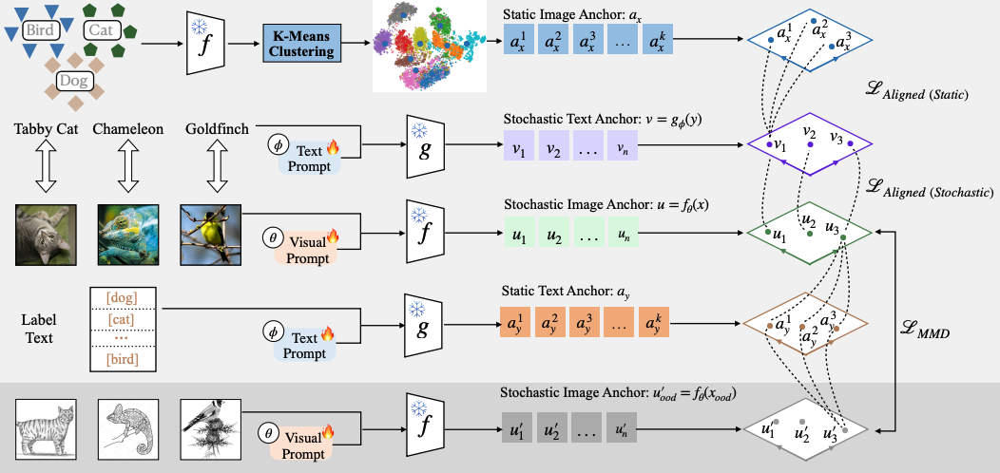
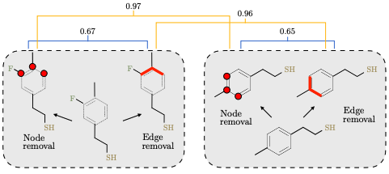
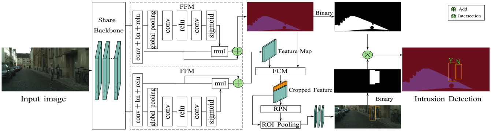
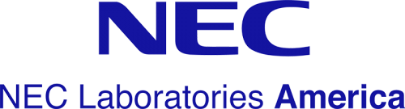
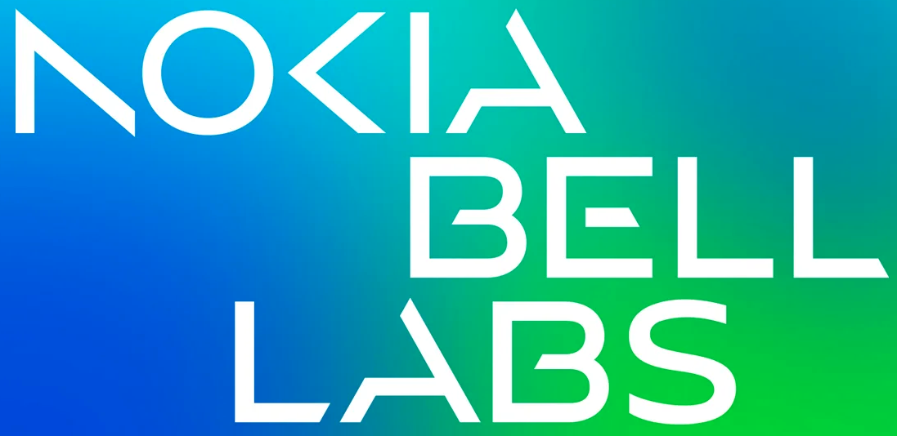
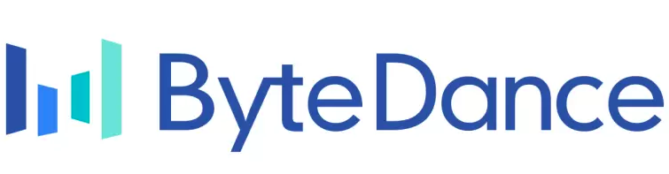

|
Jingchen Sun （孙精辰）
Ph.D. Student Department of Computer Science and Engineering University at Buffalo, State University of New York Email: jsun39@buffalo.edu
|
About Me
I am a Ph.D. student in Computer Science at University at Buffalo, State University of New York, fortunate to be supervised by Prof. Changyou Chen. Prior to this, I obtained my Master's degree from Zhejiang University and my Bachelor's degree from North China Electric Power University.
My research primarily focuses on Multi-modal Large Language Lodels (LLMs), including but not limited to vision-language and audio-language models. I have developed several parameter-efficient methods, such as cross-modal prompt tuning and training-free support sets, to facilitate and enhance the application of these pretrained LLMs in downstream tasks.
I am currently interested in leveraging Retrieval-Augmented Generation (RAG) and Knowledge Distillation (KD) to enhance the reasoning capabilities of multimodal LLMs. If you are also interested in related topics and would like to collaborate, feel free to drop me an email!
News [Update!]
- 02/21/2026: One paper were accepted to CVPR 2026!
- 01/17/2026: One paper were accepted to ICASSP 2026!
- 11/07/2025: One paper were accepted to AAAI 2026!
- 12/20/2024: Two papers were accepted to ICASSP 2025!
- 10/28/2024: A paper was accepted to WACV 2025!
- 09/25/2024: A paper was accepted to NeurIPS 2024!
- 08/23/2024: I finished the intern at NEC Labs, great summer at Princeton !
Highlight Publications
-
 Beta-KD: Uncertainty-Aware Knowledge Distillation for Multimodal Large Language Models
Jingchen Sun, Shaobo Han, Deep Anil Patel, Can Jin, Changyou Chen.
We propose a novel uncertainty-aware knowledge distillation method, which can improve the performance of the student model by leveraging the uncertainty of the teacher model. CVPR 2026
Code PDF -
 CLAP-S: Support Set-Based Adaption for Downstream Fiber-Optic Acoustic Recognition
Jingchen Sun, Shaobo Han, Wataru Kohno, Changyou Chen.
ICASSP 2025
Code PDF -
 Craft: Cross-modal Aligned Features Improve Robustness of Prompt Tuning
Jingchen Sun, Rohan Sharma, Vishnu Suresh Lokhande, Changyou Chen
WACV 2025
Code PDF -
 A probability contrastive learning framework for 3D molecular representation learning
Jiayu Qin, Jian Chen, Rohan Sharma, Jingchen Sun, Changyou Chen
NeurIPS 2024
Code PDF -
 PIDNet: An Efficient Network for Dynamic Pedestrian Intrusion Detection
Jingchen Sun, Jiming Chen, Tao Chen, Jiayuan Fan, Shibo He
ACM Multimedia 2020
Code PDF
Internship
-

NEC Labs America
Research Intern
Princeton, NJ, June 2024/2025 - Aug 2024/2025 -

Nokia Bell Labs
Applied AI Researcher Intern
Murray Hill, NJ, June 2023 - Aug 2023 -

Bytedance
Computer Vision Intern
Shanghai, May 2021 - July 2021
Conference Reviewrs
- NeurIPS 2024-2025, ICLR 2025-2026, ICML 2025, AISTATS 2025, IJCAI 2025, WACV 2025, ACM MM 2025, ICASSP 2025-2026, IJCNN 2025
Journal Reviewrs
- Transactions on Machine Learning Research 2024-2025
Teaching Asistant
- CSE 474/574: Introduction to Machine Learning (2024 Spring, 2022 Fall)
- CSE 676: Deep Learning (2022 Spring)